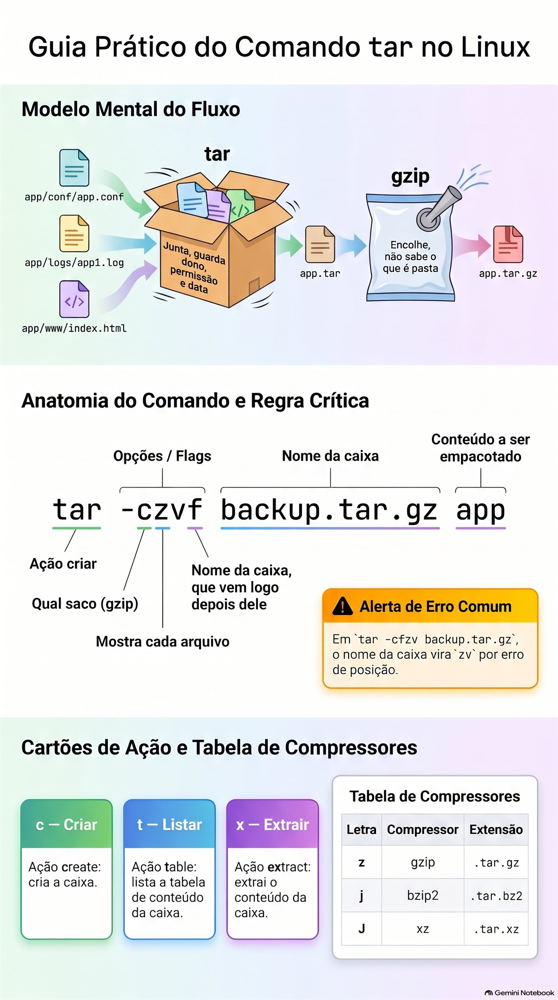
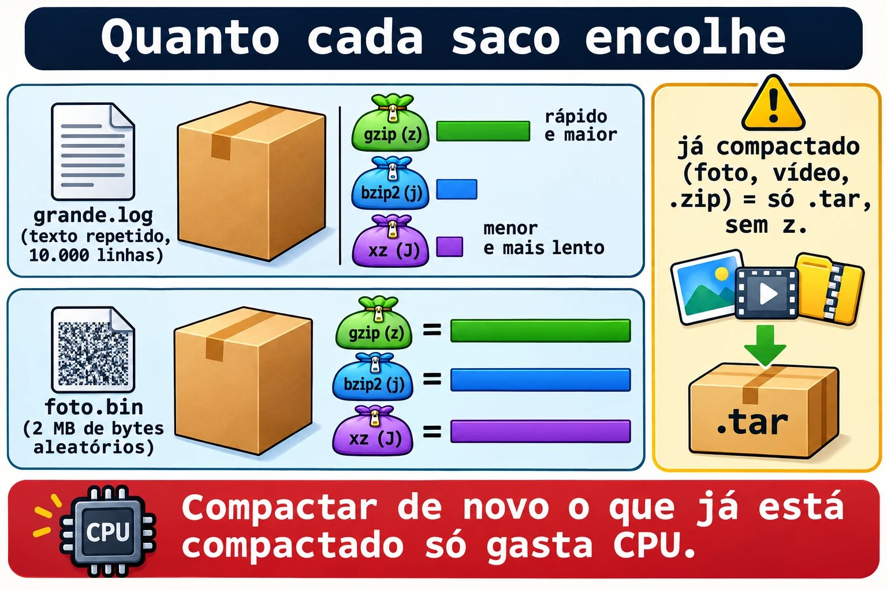
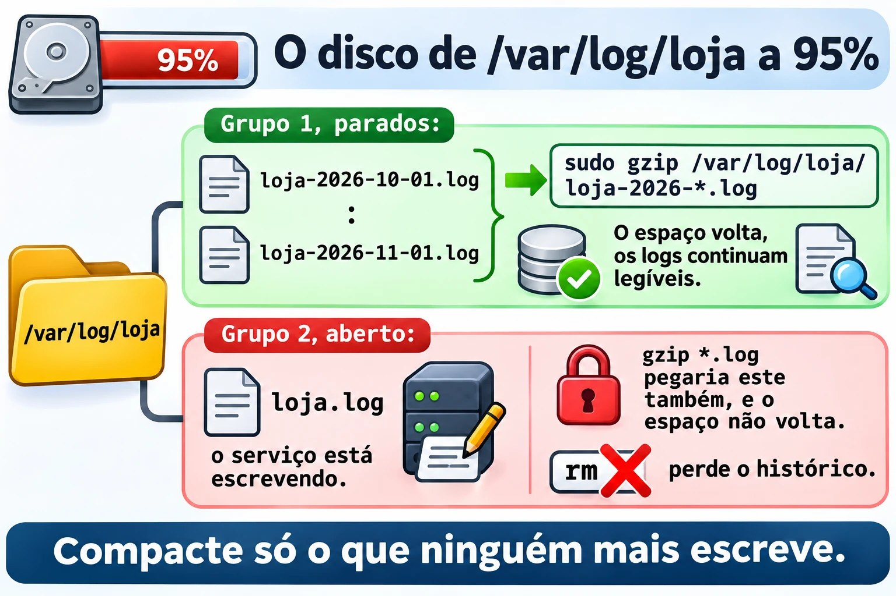
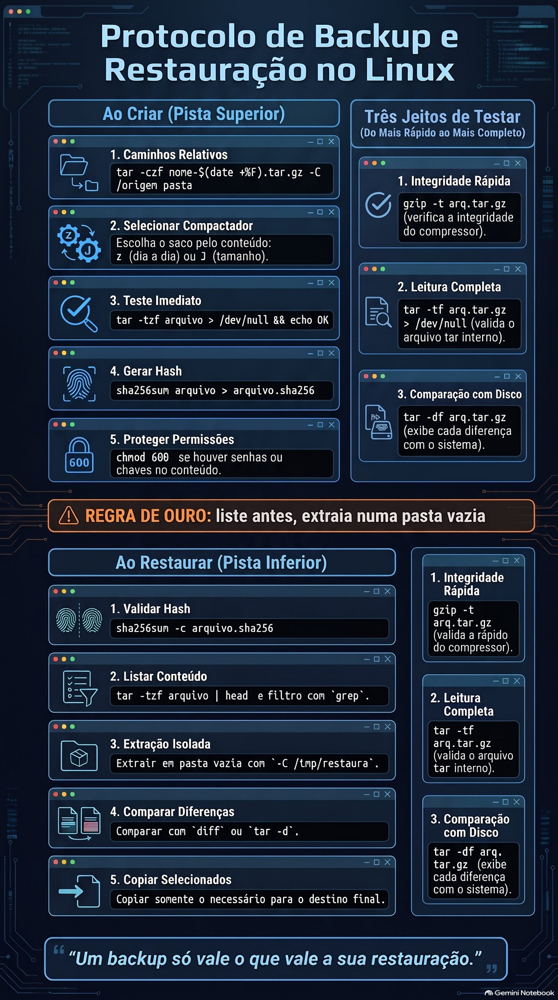
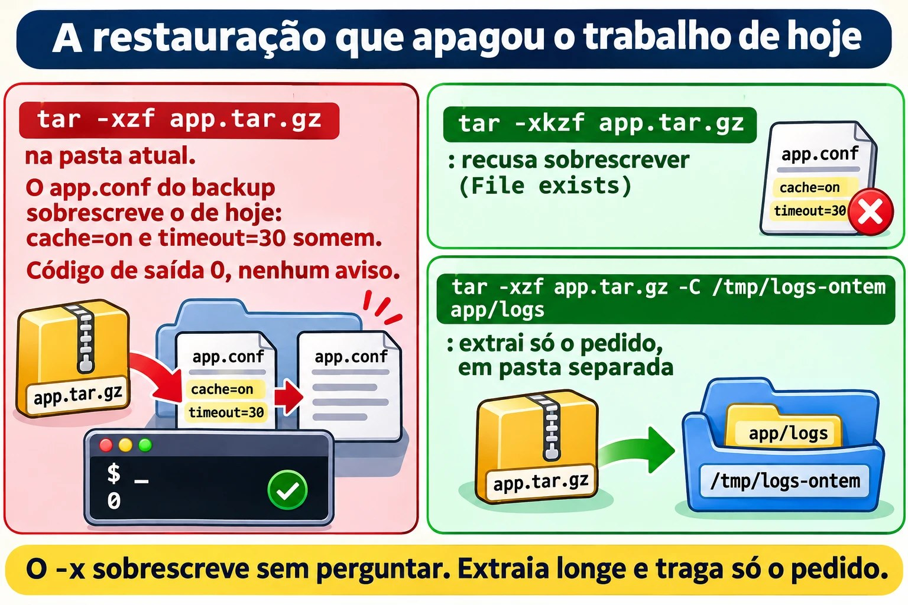

Aula 1.7 · Arquivar e compactar
Você aprende a juntar uma pasta inteira num arquivo só, a encolher esse arquivo e, principalmente, a abrir um backup sem destruir o que já existe no servidor. No fim, "restaura a configuração de ontem" deixa de ser um comando arriscado e vira um procedimento de cinco passos, que você repete igual em qualquer cliente.
| Ficha | Aula 1.7 |
|---|---|
| Módulo | M1 · Linha de comando, aula 7 de 10 |
| Quando | Semana 3 |
| Ao final você consegue | Criar, listar e extrair arquivos tar com e sem compressão; escolher entre gzip, bzip2, xz e zip sabendo o custo de cada um; testar um backup antes de precisar dele; extrair numa pasta separada e trazer só o arquivo que interessa; trocar arquivos com quem usa Windows |
| Pré-requisitos | Aulas 1.4 a 1.6, com o ~/lab13 ainda nas VMs |
| Tempo | Cerca de 2h30 |
| Snapshots | m1a7-inicio e m1a7-fim nas duas VMs |
1 · Aquecimento
Três perguntas, de cabeça, antes de ler qualquer coisa. Escreva as respostas; o Gabarito confere no fim.
- Na Aula 1.6, como você gravava a saída e os erros de um script de backup no mesmo log, sem apagar o que já estava lá?
- Na Aula 1.5, você leu um log terminado em
.gzsem descompactá-lo antes. Com qual comando? - Palpite: você manda a mesma pasta como
.zipe como.tar.gz. Qual dos dois guarda o dono e o grupo de cada arquivo?
2 · Por que importa
Segunda, 9h10. O cliente liga: "alguém mexeu na configuração do sistema de pedidos ontem à noite, volta como estava na sexta". Você tem o backup de sexta, etc-2026-10-30.tar.gz, no NAS. Entra como root, vai para /, roda tar -xzf etc-2026-10-30.tar.gz e o prompt volta em dois segundos, sem nenhuma mensagem. O arquivo do sistema de pedidos voltou. E voltaram também, para a versão de sexta, o /etc/passwd, o /etc/shadow e a configuração de rede, que outro colega tinha alterado no sábado com autorização. Na terça, dois usuários novos não conseguem entrar, e ninguém liga o problema ao backup restaurado na véspera.
O tar não pergunta antes de sobrescrever. Esta aula ensina o hábito que evita o desastre: listar antes, extrair numa pasta vazia, comparar e copiar só o que precisa voltar.
Segundo caso. O script de backup roda toda noite há oito meses, e o arquivo de cada dia está lá, com tamanho razoável. No dia em que o disco do servidor morre, o backup mais recente para no meio: unexpected end of file. A cópia para o NAS caía sempre pela metade, e ninguém nunca tinha aberto um backup. Backup que nunca foi testado é só uma esperança. Aqui você aprende a testar sem extrair, em um segundo.
Terceiro caso, o mais comum. O suporte de um fornecedor pede "os logs do servidor, compactados". Quem vai abrir usa Windows. Você precisa saber o que o Windows abre sem instalar nada, e o que ele estraga.
E o quarto, de toda madrugada: o disco de logs chega a 95%. Antes de apagar qualquer coisa, compactar os logs antigos libera, em texto, de 80% a 95% do espaço. Mas há um jeito de compactar que apaga o original na hora, e é bom saber disso antes.
3 · Modelo mental
O tar é a caixa de mudança. O gzip, o bzip2 e o xz são o saco a vácuo.
São duas tarefas diferentes, feitas por ferramentas diferentes:
- A caixa, que é o
tar, junta muitos arquivos num só. Dentro dela vai cada arquivo com seu nome, pasta, dono, grupo, permissões e data. A caixa não diminui nada: dez arquivos de 1 MB dão um.tarde pouco mais de 10 MB. - O saco a vácuo, que é o compressor, encolhe um único fluxo de bytes. Ele não sabe o que é uma pasta. Se você pedir para o
gzipcompactar uma pasta, ele recusa.
Um .tar.gz é a caixa dentro do saco. Por isso o nome tem duas extensões, e por isso as letras do tar vêm em dois grupos: as que dizem o que fazer com a caixa e a que diz qual saco usar.
app/conf/app.conf ─┐
app/logs/app1.log ─┼─► tar ─► app.tar ─► gzip ─► app.tar.gz
app/www/index.html ┘ caixa: junta, saco: encolhe,
guarda dono, não sabe o que
permissão e data é pastaO zip, o formato do Windows, faz as duas coisas de uma vez, arquivo por arquivo. Isso tem uma vantagem: dá para tirar um arquivo do meio de um .zip enorme sem ler o resto. E duas desvantagens: compacta pior quando há muitos arquivos parecidos, porque cada um é compactado sozinho, e não guarda dono nem grupo do Linux.
A primeira ideia que você leva. As letras do tar se leem como uma frase. A primeira diz a ação, e só há três que você usa todo dia:
| Letra | Ação | Lembre como |
|---|---|---|
| c | criar a caixa | create |
| t | listar o que tem dentro | table, a tabela de conteúdo |
| x | extrair | extract |
Depois vêm os modificadores: v mostra cada arquivo enquanto trabalha, f diz o nome do arquivo da caixa, e z, j ou J escolhem o saco. O f tem uma regra que derruba muita gente: o nome da caixa vem logo depois dele. Em tar -czvf backup.tar.gz app, o f é a última letra, e backup.tar.gz é o nome. Em tar -cfzv backup.tar.gz app, o nome da caixa vira zv.
A segunda ideia. Extrair escreve por cima, sem perguntar. O tar -x se comporta como um cp sem -i aplicado a centenas de arquivos de uma vez. Se o caminho guardado dentro da caixa já existe onde você está, o arquivo atual é substituído pela versão da caixa. Por isso a regra de ouro: liste antes, extraia numa pasta vazia.
A terceira ideia. Um backup só vale o que vale a sua restauração. Criar o arquivo prova que o script rodou; só listar ou testar o arquivo prova que dá para abri-lo.
Ponte Windows. No Windows você clica com o botão direito em "Enviar para > Pasta compactada" e ganha um .zip. O Windows 10 e o 11 também trazem um tar.exe de verdade, em C:\Windows\System32, que abre .tar.gz pelo cmd ou pelo PowerShell com o mesmo tar -xzf. O 7-Zip abre os dois formatos, mas um .tar.gz em duas etapas: primeiro tira o saco, depois abre a caixa. A diferença que importa: o .zip do Windows não sabe o que é dono, grupo ou permissão do Linux. Um script com permissão de execução que passa por um .zip criado no Windows chega sem ela.


4 · Conceito em camadas
Essencial
O tar. As três frases que você vai escrever mil vezes:
tar -czf app.tar.gz app/
tar -tzf app.tar.gz
tar -xzf app.tar.gz -C /tmp/restauraCrie, liste, extraia. O -C diz em que pasta extrair; sem ele, o tar extrai na pasta atual. Ao ler, o tar do GNU, que é o da Rocky e o da Debian, descobre sozinho qual compressor foi usado. Então tar -tf app.tar.gz e tar -xf app.tar.gz também funcionam. Ao criar, você precisa dizer.
| Letra | Compressor | Extensão | Quando usar |
|---|---|---|---|
| z | gzip | .tar.gz ou .tgz | O padrão. Rápido, e todo sistema abre |
| j | bzip2 | .tar.bz2 | Formato antigo. Você vai encontrar em arquivos velhos |
| J | xz | .tar.xz | Menor arquivo, criação mais lenta. Comum em código-fonte e pacotes |
| nenhuma | nenhum | .tar | Quando o conteúdo já está compactado, como fotos, vídeos e .zip |
Com -a, no lugar da letra, o tar escolhe o compressor pela extensão do nome: tar -caf app.tar.xz app/ usa o xz.
Os compressores sozinhos. Servem para um único arquivo. Por padrão, eles substituem o original:
| Compactar | Descompactar | Ler sem descompactar | Testar |
|---|---|---|---|
| gzip arq | gunzip arq.gz | zcat, zless, zgrep | gzip -t arq.gz |
| bzip2 arq | bunzip2 arq.bz2 | bzcat, bzless, bzgrep | bzip2 -t arq.bz2 |
| xz arq | unxz arq.xz | xzcat, xzless, xzgrep | xz -t arq.xz |
gzip arq cria arq.gz e apaga o arq. Para guardar o original, use -k, de keep. Para escolher entre velocidade e tamanho, os níveis vão de -1, o mais rápido, a -9, o menor arquivo. O padrão do gzip é 6.
O zip. Formato próprio, com dois programas:
zip -r logs.zip logs/
unzip -l logs.zip
unzip -t logs.zip
unzip logs.zip -d /tmp/restauraO -r entra nas pastas; sem ele, o zip guarda só a pasta vazia. O -l lista, o -t testa e o -d escolhe a pasta de destino.
Testar. Três jeitos, do mais rápido ao mais completo:
gzip -t arq.tar.gz: o saco está inteiro?tar -tf arq.tar.gz > /dev/null: o saco está inteiro, e a caixa dentro dele também? Se não aparecer nenhum erro, o arquivo abre.tar -df arq.tar.gz: a caixa é igual ao que está no disco agora? Mostra cada diferença.
E, para cópias entre máquinas, a impressão digital: sha256sum arq.tar.gz antes e depois da cópia. Se os dois números forem iguais, a cópia é idêntica.
Ponte Windows
| No Windows | No Linux | Cuidado |
|---|---|---|
| Enviar para > Pasta compactada | zip -r arq.zip pasta | O Linux pode não ter o zip instalado |
| Extrair tudo... | unzip arq.zip -d pasta | Sem -d, extrai na pasta atual |
| Compress-Archive, no PowerShell | zip -r ou tar -czf | O .zip não guarda dono nem grupo |
| tar.exe -xzf, no cmd | tar -xzf | O mesmo comando dos dois lados |
| 7-Zip com .tar.gz | tar -xzf | O 7-Zip abre em duas etapas |
| Backup do Windows Server | tar com data no nome e teste | Nenhum dos dois avisa se o backup não abre |
Avançado
tar --exclude='*.log' -czf app.tar.gz app/deixa de fora o que casa com o padrão. A Aula 8.3 aprofunda seleção e exclusão.tar -xzf app.tar.gz app/conf/app.confextrai um arquivo só. O caminho tem de ser exatamente o que otar -tmostra.tar --strip-components=1 -xzf app.tar.gztira a primeira pasta do caminho ao extrair.tar --keep-old-files, ou-k, recusa sobrescrever um arquivo que já existe, e termina com erro.--skip-old-filespula em silêncio, e--keep-newer-filessó substitui o que for mais antigo que a versão da caixa.- A Rocky, como o RHEL, usa SELinux e às vezes ACLs. Para guardar esses atributos,
tar --selinux --acls --xattrs. É assunto da Aula 8.5. - O
zstd, comtar --zstd, comprime quase tão bem quanto o xz e quase tão rápido quanto o gzip. É o formato dos backups de contêiner do Proxmox, os arquivosvzdump-lxc-*.tar.zst. - Com
xz -T0, o xz usa todos os núcleos da CPU. Comtar -I 'xz -T0' -cf, o mesmo dentro do tar.
5 · Rocky × Debian
O tar é o mesmo nas duas, o do GNU, e as opções desta aula funcionam igual. A diferença está no que vem instalado e em como cada sistema usa compressão no dia a dia.
| Item | Rocky 9 | Debian 13 |
|---|---|---|
| tar, gzip e xz | Vêm instalados | Vêm instalados |
| bzip2, zip e unzip | Podem faltar na instalação mínima | Podem faltar na instalação mínima |
| Instalar o que falta | sudo dnf install bzip2 zip unzip | sudo apt install bzip2 zip unzip |
| Logs girados pelo logrotate | Com a data no nome, em geral sem .gz | .1 sem compactar e .2.gz em diante, por causa do delaycompress |
| Documentação em /usr/share/doc | Arquivos comuns | Muitos arquivos .gz, como changelog.Debian.gz |
| Backups automáticos do sistema | Não há uma pasta padrão | /var/backups, com cópias .gz da lista de pacotes |
Confira os logs girados nas duas:
ls /var/log | head -n 30
grep -n compress /etc/logrotate.confNa Rocky, algo como messages-20261101 e secure-20261101, sem .gz. O compress aparece comentado no logrotate.conf. Na Debian, procure arquivos como dpkg.log.1 e dpkg.log.2.gz. Na Debian, quem decide é cada arquivo em /etc/logrotate.d:
[ "$(hostname)" = debian-lab ] && grep -l delaycompress /etc/logrotate.d/*
[ "$(hostname)" = debian-lab ] && ls -lh /var/backupsO delaycompress deixa o .1 sem compactar por um ciclo, porque algum programa ainda pode estar escrevendo nele. É a mesma lição do tail -F da Aula 1.5, vista pelo outro lado.
Na Debian, o próprio pacote .deb leva uma caixa tar por dentro. Baixe um pacote pequeno para a pasta atual, sem instalar nada, e olhe o conteúdo:
[ "$(hostname)" = debian-lab ] && cd /tmp && apt download hostname && dpkg-deb -c hostname_*.debAlgo como uma lista no formato do tar -tv, com permissões, dono root/root, tamanho, data e caminhos como ./usr/bin/hostname. É exatamente a caixa que o dpkg abre em / quando instala o pacote. Apague o arquivo baixado com rm -v /tmp/hostname_*.deb.


6 · Lab guiado
Faça tudo nas duas VMs, a não ser quando o passo disser só uma. Os arquivos ficam em ~/lab13/arquivo, e a matéria-prima é uma pequena aplicação de mentira, com configuração, logs, um script e um arquivo binário. Em cada passo, quando aparecer Preveja, escreva a resposta antes de apertar Enter.
Passo 1 · Preparar
No nó Proxmox:
qm snapshot 201 m1a7-inicio
qm snapshot 202 m1a7-inicioEm cada VM, confira se as ferramentas estão instaladas:
for p in tar gzip bzip2 xz zip unzip; do command -v $p > /dev/null && echo "ok $p" || echo "FALTA $p"; doneSe aparecer algum FALTA, instale:
[ "$(hostname)" = rocky-lab ] && sudo dnf install -y bzip2 xz zip unzip
[ "$(hostname)" = debian-lab ] && sudo apt install -y bzip2 xz-utils zip unzipRode o for de novo: todas as linhas devem dizer ok. Agora monte a aplicação:
mkdir -p ~/lab13/arquivo/app/conf ~/lab13/arquivo/app/logs ~/lab13/arquivo/app/www
cd ~/lab13/arquivo
cp ~/lab13/logs/app1.log app/logs/
for i in $(seq 1 500); do cat ~/lab13/logs/app1.log; done > app/logs/grande.log
head -c 2M /dev/urandom > app/www/foto.bin
echo '<h1>Loja</h1>' > app/www/index.html
cat > app/conf/app.conf <<'EOF'
porta=8080
banco=pg01
usuarios_max=50
EOF
printf '#!/bin/bash\necho "app ok"\n' > app/iniciar.sh
chmod 750 app/iniciar.sh
ls -lR app
du -sh appO grande.log é o app1.log repetido 500 vezes: 10.000 linhas de texto muito repetitivo, como um log de verdade. O foto.bin são 2 MB de bytes aleatórios, que fazem o papel de uma foto ou de um arquivo já compactado. O du deve mostrar algo como 3,0M app. Se o app1.log não existir, volte ao Passo 1 da Aula 1.5.
Passo 2 · A caixa: criar, listar e extrair
Primeiro, só a caixa, sem compressão:
tar -cvf app.tar app
ls -lh app.tarO v mostra cada arquivo que entra. Preveja. O app.tar vai ter mais, menos ou o mesmo tamanho que o du mostrou?
Um pouco mais. A caixa não comprime, e ainda guarda um cabeçalho de 512 bytes para cada arquivo, com nome, dono, permissões e data. Agora olhe dentro dela:
tar -tf app.tar
tar -tvf app.tarO -t sozinho mostra os caminhos. Com v, aparece algo como um ls -l:
-rwxr-x--- student/student 27 2026-11-02 10:14 app/iniciar.shPermissão, dono e grupo, tamanho, data e caminho: tudo isso viaja dentro da caixa. Repare que os caminhos começam em app/, sem barra na frente. São relativos, e isso vai importar no Passo 5.
Extraia numa pasta separada e confira:
mkdir -p /tmp/teste1
tar -xvf app.tar -C /tmp/teste1
ls -l /tmp/teste1/appO iniciar.sh voltou com -rwxr-x---, como era. Agora, o caminho absoluto:
tar -cf hosts.tar /etc/hosts
tar -tf hosts.tarAlgo como tar: Removing leading '/' from member names, e a lista mostra etc/hosts, sem a barra. Não é erro: o tar tira a barra de propósito, para que a extração caia na pasta onde você está, e não por cima do /etc/hosts do sistema. O colega da seção 2 só destruiu o /etc porque estava em / quando extraiu.
Decida 1 · A ordem das letras. Cenário: com pressa, você digita tar -cfv backup.tar app, com o v depois do f. O que acontece?
- A) O mesmo que
tar -cvf. A ordem das letras não importa. - B) O
tarcria um arquivo chamadov, põe dentro dele a pastaapp, e reclama quebackup.tarnão existe. - C) O
tarrecusa o comando, porque oftem de ser a primeira letra. - D) Cria o
backup.tarnormalmente, só não mostra os nomes na tela.
Escolha a letra antes de olhar a tabela.
| Se você marcou | Resultado | Por quê |
|---|---|---|
| A | ❌ Errada | A ordem das outras letras não importa, mas o f pega a palavra seguinte como nome da caixa. Com -cfv, essa palavra é o v. |
| B | ✅ Certa | O f recebeu v como nome. Sobraram backup.tar e app como coisas a guardar, e o backup.tar não existe. A caixa v é criada com o app dentro, e o comando termina com erro. |
| C | ❌ Errada | O f pode vir em qualquer posição. O que importa é que o nome da caixa venha logo depois dele. |
| D | ❌ Errada | O backup.tar nunca é criado. O tar o tratou como algo a guardar, não como o destino. |
Para fixar: o f é sempre a última letra do grupo, e o nome da caixa vem logo depois. Leia -czf como "crie, com gzip, o arquivo...".
Confira:
tar -cfv backup.tar app
echo "código de saída: $?"
ls -l v backup.tar
tar -tf v | head -n 3
rm -v vAlgo como tar: backup.tar: Cannot stat: No such file or directory e código de saída 2. O ls mostra o arquivo v, com o tamanho do app.tar, e diz que backup.tar não existe. O conteúdo de v é a pasta app.
Passo 3 · O saco sozinho: gzip, bzip2 e xz
Faça uma cópia do log grande e compacte:
cp app/logs/grande.log g1.log
ls -lh g1.log
gzip g1.logPreveja. O que o ls vai mostrar agora: o g1.log e o g1.log.gz, ou só um deles?
ls -lh g1.log*Só o g1.log.gz. O gzip substituiu o original pelo compactado. E o tamanho caiu de algo como 600 KB para poucos KB: o texto é tão repetitivo que quase tudo some. Leia sem descompactar e depois descompacte:
zcat g1.log.gz | wc -l
gunzip g1.log.gz
ls -lh g1.log*As 10.000 linhas, e de novo só o g1.log, agora sem o .gz. Para guardar o original, use -k:
gzip -k g1.log
ls -lh g1.log*Agora estão os dois. Compare os três compressores no mesmo arquivo:
for c in gzip bzip2 xz; do cp app/logs/grande.log t-$c.log; $c t-$c.log; done
ls -lh t-*Algo como o .xz menor, o .bz2 no meio e o .gz maior. A diferença existe, mas os três ficam muito menores que o original. Agora tente o que não dá:
gzip app
gzip -k app/www/foto.bin
ls -l app/www/foto.bin*
rm -v app/www/foto.bin.gzO primeiro responde gzip: app is a directory -- ignored: o saco não sabe o que é pasta. O segundo funciona, mas o foto.bin.gz fica do mesmo tamanho do original, ou um pouco maior. Bytes aleatórios não têm repetição para tirar. Vale para fotos, vídeos, .zip e qualquer coisa já compactada: compactar de novo só gasta CPU.
Decida 2 · O disco cheio de madrugada. Cenário: o disco de /var/log/loja está em 95%. Lá há um log por dia, de loja-2026-10-01.log a loja-2026-11-01.log, mais o loja.log, que o serviço está escrevendo agora. Você quer liberar espaço sem perder nenhum log. O que você faz?
- A)
sudo gzip /var/log/loja/*.log - B)
sudo gzip /var/log/loja/loja-2026-*.log - C)
sudo tar -czf /var/log/loja/antigos.tar.gz /var/log/loja - D)
sudo rm /var/log/loja/loja-2026-10-*.log
Escolha a letra antes de olhar a tabela.
| Se você marcou | Resultado | Por quê |
|---|---|---|
| A | ❌ Errada | O *.log pega também o loja.log, que está aberto. O gzip cria o .gz e apaga o nome, mas o serviço continua escrevendo no arquivo apagado: o espaço não volta, e o que for escrito depois se perde. É o inode da Aula 1.5. |
| B | ✅ Certa | Compacta só os arquivos com data, que ninguém mais escreve. Cada um é substituído pelo .gz, e o espaço volta na hora. Os logs continuam legíveis com zless e zgrep. |
| C | ❌ Errada | Cria mais um arquivo, no mesmo disco cheio, e não apaga nenhum original. O uso do disco sobe. E ainda tenta pôr dentro da caixa a própria caixa que está sendo criada. |
| D | ❌ Errada | Libera espaço, mas apaga os logs de outubro. Ninguém autorizou perder histórico. |
Para fixar: o gzip sozinho troca o original pelo .gz. Em log, use só nos arquivos que ninguém mais escreve.
Arrume a pasta antes de seguir:
rm -v g1.log g1.log.gz t-*

Passo 4 · A caixa dentro do saco
Agora as duas coisas juntas. Compare os três sacos, só com os logs:
time tar -czf logs.tar.gz app/logs
time tar -cjf logs.tar.bz2 app/logs
time tar -cJf logs.tar.xz app/logs
ls -lh logs.tar*
file logs.tar*O time mostra quanto cada um demorou: olhe a linha real. Algo como o xz mais lento e o menor, o gzip mais rápido e o maior. Com 600 KB, tudo leva frações de segundo; com 50 GB, a diferença vira horas. O file olha os primeiros bytes e diz o formato de verdade, sem confiar na extensão: algo como gzip compressed data, bzip2 compressed data e XZ compressed data.
Preveja. Agora a aplicação inteira, com o foto.bin. Os três arquivos vão ter tamanhos muito diferentes?
tar -czf app.tar.gz app
tar -cJf app.tar.xz app
ls -lh app.tar app.tar.gz app.tar.xzNão. Algo como 3,0 MB, 2,1 MB e 2,0 MB. Os 2 MB do foto.bin não encolhem com nenhum saco e dominam o total. Antes de escolher o compressor, olhe o que vai dentro da caixa.
O tar também escolhe o saco pela extensão, com -a, e descobre sozinho qual saco abrir:
tar -caf auto.tar.bz2 app/conf
file auto.tar.bz2
tar -tf auto.tar.bz2
tar -tf logs.tar.xzNenhum j nem J na leitura, e tudo funciona. Já no -c, sem a letra e sem o -a, a caixa sai sem compressão, mesmo com .gz no nome.
Decida 3 · O pedido ao pé da letra. Cenário: o chamado diz "crie o arquivo /root/backup.tar.bz2 com o conteúdo de /usr/local, compactado com bzip2". Qual comando cumpre a tarefa?
- A)
sudo tar -czf /root/backup.tar.bz2 /usr/local - B)
sudo tar -cjf /root/backup.tar.bz2 /usr/local - C)
sudo bzip2 -c /usr/local > /root/backup.tar.bz2 - D)
sudo tar -cfj /root/backup.tar.bz2 /usr/local
Escolha a letra antes de olhar a tabela.
| Se você marcou | Resultado | Por quê |
|---|---|---|
| A | ❌ Errada | O z usa gzip. O arquivo tem o nome certo e o formato errado, e o script de correção usa o file. A tarefa vale zero. |
| B | ✅ Certa | O c cria, o j usa bzip2, e o f recebe o nome logo depois. O sudo é preciso para escrever em /root. |
| C | ❌ Errada | O bzip2 não sabe o que é pasta. Sem a caixa, não há o que compactar. |
| D | ❌ Errada | O f pega j como nome da caixa. É a armadilha da Decida 1, agora com root. |
Para fixar: z é gzip, j é bzip2, J é xz. Num pedido exato, termine sempre com file e tar -tf.
Confira, e apague depois:
sudo tar -cjf /root/backup.tar.bz2 /usr/local
sudo file /root/backup.tar.bz2
sudo tar -tf /root/backup.tar.bz2 | head -n 5
sudo rm -v /root/backup.tar.bz2Passo 5 · Liste antes de extrair
Um fornecedor manda uma atualização. Ele criou a caixa de dentro da pasta, sem o nome dela:
cd ~/lab13/arquivo/app && tar -czf ../patch.tar.gz * && cd ..
mkdir -p downloads
touch downloads/contrato.pdf downloads/planilha.xlsxVocê baixou o patch.tar.gz para a pasta downloads, onde já há outros arquivos. Preveja. Se você extrair o patch dentro de downloads, onde os arquivos vão parar?
Não extraia ainda. Olhe primeiro:
tar -tzf patch.tar.gzOs caminhos começam em conf/, logs/, www/ e iniciar.sh. Não há uma pasta em volta. Extraído em downloads, o conteúdo se espalharia no meio do contrato e da planilha, e, se houvesse um conf/ ali, os arquivos seriam sobrescritos. Esse tipo de caixa tem até apelido, tarbomb. O jeito seguro é dar a ela uma pasta vazia:
mkdir -p /tmp/patch
tar -xzf patch.tar.gz -C /tmp/patch
ls -l /tmp/patch
ls -l downloadsO downloads continua só com os dois arquivos. Agora tire um arquivo só de uma caixa. O caminho tem de ser exatamente o que o -t mostra:
mkdir -p /tmp/um
tar -xzf app.tar.gz -C /tmp/um conf/app.conf
tar -xzf app.tar.gz -C /tmp/um app/conf/app.conf
find /tmp/umO primeiro falha com algo como tar: conf/app.conf: Not found in archive, porque dentro do app.tar.gz o caminho começa em app/. O segundo funciona, e o find mostra só app/conf/app.conf. As pastas do caminho são criadas, o resto não.
Decida 4 · O patch do fornecedor. Cenário: o fornecedor manda patch.tar.gz e escreve "extraia na pasta do sistema, /opt/loja". Qual é o primeiro comando?
- A)
cd /opt/loja && sudo tar -xzf ~/patch.tar.gz - B)
tar -tzf ~/patch.tar.gz | head -n 30 - C)
sudo tar -xzf ~/patch.tar.gz -C / - D)
gunzip ~/patch.tar.gz
Escolha a letra antes de olhar a tabela.
| Se você marcou | Resultado | Por quê |
|---|---|---|
| A | ❌ Errada | Pode até dar certo, mas você extraiu como root, por cima do sistema, sem saber o que havia na caixa. Se os caminhos começarem em opt/loja/, os arquivos vão para /opt/loja/opt/loja. Se forem soltos, sobrescrevem a configuração atual. |
| B | ✅ Certa | Olhar não muda nada. Você vê se os caminhos começam numa pasta, quantos arquivos são e se algum vai substituir uma configuração que você mudou. Só depois decide onde extrair. |
| C | ❌ Errada | Extrair em / como root é o desastre da seção 2. Só faça isso se você leu toda a lista e sabe que cada caminho tem de ir exatamente para lá. |
| D | ❌ Errada | Tira o saco e deixa a caixa, patch.tar. Não mostra o conteúdo e ainda apaga o .gz original. |
Para fixar: antes de todo -x, um -t. Custa um segundo.
Passo 6 · Testar antes de confiar
Um backup só vale o que a restauração entrega. Há quatro testes, do mais rápido ao mais completo:
cd ~/lab13/arquivo
gzip -t app.tar.gz && echo "gzip ok"
xz -t logs.tar.xz && echo "xz ok"
tar -tzf app.tar.gz > /dev/null && echo "tar ok"O gzip -t e o xz -t não dizem nada quando está tudo certo: só o echo aparece. Eles leem o saco inteiro e conferem a soma de verificação que vai no fim do arquivo. O tar -t com a saída jogada em /dev/null vai mais longe: abre o saco e percorre a caixa até o último cabeçalho. Se qualquer pedaço faltar, os dois reclamam e devolvem erro.
O terceiro teste compara a caixa com o disco. Rode de dentro da pasta onde os caminhos fazem sentido:
tar -dzf app.tar.gz && echo "igual ao disco"
echo "porta=9090" >> app/conf/app.conf
tar -dzf app.tar.gz
echo "código de saída: $?"Na primeira vez, igual ao disco. Depois da mudança, algo como:
app/conf/app.conf: Mod time differs
app/conf/app.conf: Size differse código de saída 1. O -d (diff) diz o que mudou desde o backup, sem extrair nada. Desfaça a mudança antes de seguir:
sed -i '/porta=9090/d' app/conf/app.confO quarto teste é a impressão digital. O sha256sum calcula um número que muda se um único bit do arquivo mudar. Guarde esse número na hora de criar o backup, e confira depois de copiar, de baixar ou antes de restaurar:
sha256sum app.tar.gz > app.tar.gz.sha256
cat app.tar.gz.sha256
cp app.tar.gz /tmp/copia.tar.gz
cd /tmp && sha256sum -c ~/lab13/arquivo/app.tar.gz.sha256 ; cd ~/lab13/arquivoO -c procura o arquivo pelo nome escrito no .sha256. Em /tmp ele não acha o app.tar.gz, só a copia, e reclama. Compare a cópia direto:
sha256sum app.tar.gz /tmp/copia.tar.gz
sha256sum -c app.tar.gz.sha256Os dois números são iguais, e o -c responde app.tar.gz: OK. É assim que se confere uma ISO baixada da internet: o site publica o .sha256 ao lado.
Decida 5 · O backup de ontem. Cenário: o servidor de arquivos de um cliente morreu, e você precisa restaurar o backup-2026-11-01.tar.gz que o script de todo dia criou no NAS. Antes de tudo, você quer saber se ele está inteiro. Qual verificação responde a isso?
- A)
ls -lh backup-2026-11-01.tar.gz: tem 40 GB, do tamanho de sempre. - B)
tar -tzf backup-2026-11-01.tar.gz > /dev/null && echo OK - C)
file backup-2026-11-01.tar.gz: dizgzip compressed data. - D) O log do script diz
backup concluídoe código de saída 0.
Escolha a letra antes de olhar a tabela.
| Se você marcou | Resultado | Por quê |
|---|---|---|
| A | ❌ Errada | O tamanho só diz quantos bytes há, não se estão certos. Uma cópia cortada perto do fim ou um disco com setores ruins mantém o tamanho parecido. |
| B | ✅ Certa | Lê o arquivo do primeiro ao último byte, confere a soma do gzip e percorre todos os cabeçalhos da caixa. Se algo estiver cortado ou corrompido, o OK não aparece. |
| C | ❌ Errada | O file olha só os primeiros bytes. Um arquivo cortado pela metade continua começando como gzip. Você vai ver isso na Quebra B. |
| D | ❌ Errada | Diz que o script terminou ontem. Não diz nada sobre o que aconteceu com o arquivo depois: cópia para o NAS, disco, rede. |
Para fixar: "existe" e "tem tamanho" não são "está inteiro". Leia o arquivo até o fim com tar -t ou gzip -t.

file não provam que o backup está inteiro.Passo 7 · zip e unzip, para quem usa Windows
Crie, liste e teste um zip:
zip -r app.zip app
unzip -l app.zip
unzip -t app.zip
ls -lh app.zip app.tar.gzO -r é obrigatório: sem ele, o zip guarda só a pasta vazia. O -l lista, como o tar -t. O -t testa e termina com algo como No errors detected in compressed data of app.zip.. O tamanho fica parecido com o do .tar.gz: o algoritmo é o mesmo da família do gzip.
A diferença está no que o zip lembra. Extraia e compare:
mkdir -p /tmp/z
unzip -q app.zip -d /tmp/z
ls -l /tmp/z/app/iniciar.sh
tar -tvzf app.tar.gz app/iniciar.shO unzip do Linux devolve as permissões, então o iniciar.sh volta executável. Mas o zip não guarda dono e grupo do jeito que o tar guarda: extraído como root, tudo fica de root. E se o zip foi criado no Windows, não há permissão nenhuma: o script chega sem o x, e você precisa de um chmod.
Para mandar um zip a um cliente, só o que interessa:
zip -r logs-para-fornecedor.zip app/logs -x '*.bin'
unzip -l logs-para-fornecedor.zipO -x exclui pelo padrão. Para quem recebe no Windows, um zip abre com dois cliques. Um .tar.gz também abre no Windows 11 com o tar.exe ou o 7-Zip, mas pede uma explicação.
Regra prática: entre servidores Linux, tar. Para pessoas, principalmente no Windows, zip.
Passo 8 · Backup do /etc e restauração de um arquivo
Agora com arquivos de verdade. Faça o backup da configuração do sistema:
cd ~/lab13/arquivo
sudo tar -czf etc-$(date +%F).tar.gz -C / etc
ls -lh etc-*.tar.gz
sudo tar -tzf etc-*.tar.gz | head -n 5
sudo tar -tzf etc-*.tar.gz | wc -lO -C / faz o tar entrar em / antes de pegar o etc. Assim, os caminhos dentro da caixa começam em etc/, sem a barra, e sem a mensagem Removing leading '/'. O sudo é preciso porque arquivos como o /etc/shadow só o root lê. O $(date +%F) põe a data no nome, algo como etc-2026-11-02.tar.gz.
O arquivo de backup pertence ao root. Confira:
ls -l etc-*.tar.gzAlgo como -rw-r--r--. 1 root root. Ele contém o shadow, com os hashes das senhas, e qualquer usuário pode lê-lo. Corrija:
sudo chmod 600 etc-*.tar.gz
ls -l etc-*.tar.gzAgora simule um acidente. Alguém estragou o /etc/hosts:
sudo cp /etc/hosts /etc/hosts.antes-da-aula
echo "10.9.9.9 servidor-errado" | sudo tee -a /etc/hosts
tail -n 2 /etc/hostsRestaure só esse arquivo, sem tocar no resto do /etc. Primeiro, numa pasta separada:
sudo tar -tzf etc-*.tar.gz | grep -x 'etc/hosts'
mkdir -p /tmp/restaura
sudo tar -xzf etc-*.tar.gz -C /tmp/restaura etc/hosts
diff /tmp/restaura/etc/hosts /etc/hostsO grep -x confirma o caminho exato antes de extrair. O diff mostra algo como > 10.9.9.9 servidor-errado: a única linha que o arquivo atual tem a mais. Agora você sabe exatamente o que vai mudar. Devolva:
sudo cp /tmp/restaura/etc/hosts /etc/hosts
diff /etc/hosts.antes-da-aula /etc/hosts && echo "restaurado"
sudo rm -v /etc/hosts.antes-da-aula
sudo rm -rf /tmp/restauraNa Rocky, o cp sobre um arquivo que já existe mantém o contexto SELinux do arquivo de destino. Se você tivesse extraído direto em /etc sem --selinux, poderia precisar de um restorecon. Isso volta no Módulo 4.
Decida 6 · O sshd_config quebrado. Cenário: depois de uma mudança, o sshd não sobe mais. Você tem o etc-2026-11-01.tar.gz de ontem e quer voltar só o /etc/ssh/sshd_config. Qual caminho você segue?
- A)
cd / && sudo tar -xzf ~/etc-2026-11-01.tar.gz - B) Extrair
etc/ssh/sshd_configem/tmp/restaura, rodar odiffcom o atual, e então copiar. - C)
sudo tar -xzf ~/etc-2026-11-01.tar.gz -C / etc/ssh/sshd_config - D)
sudo gunzip ~/etc-2026-11-01.tar.gze procurar o arquivo.
Escolha a letra antes de olhar a tabela.
| Se você marcou | Resultado | Por quê |
|---|---|---|
| A | ❌ Errada | Volta o /etc inteiro para ontem: passwd, shadow, fstab, tudo. Quem criou usuário ou trocou senha hoje perde a mudança. É o caso da seção 2. |
| B | ✅ Certa | Você vê a diferença antes de mexer. Se a mudança de hoje tinha uma linha boa, como uma porta nova, você a guarda. O cp sobre o arquivo existente mantém dono, permissões e contexto SELinux. |
| C | ❌ Errada | Funciona, mas às cegas. Você troca o arquivo sem saber o que muda, e qualquer ajuste legítimo de hoje some sem aviso. Num arquivo só, o diff custa dez segundos. |
| D | ❌ Errada | Tira o saco e apaga o .tar.gz original. Você fica com um .tar de vários MB e ainda não restaurou nada. |
Para fixar: restaure em /tmp, compare com diff, copie só o que precisa.
Protocolo · Backup e restauração sem susto
Cole isso no seu caderno. É a mesma ordem para um /etc, um site ou uma pasta de cliente.
Ao criar:
- Use
-Cpara que os caminhos fiquem relativos e comecem numa pasta com nome:tar -czf nome-$(date +%F).tar.gz -C /origem pasta. - Escolha o saco pelo conteúdo:
zno dia a dia,Jse o tamanho importa mais que o tempo, nenhum se o conteúdo já é compactado. - Teste na hora:
tar -tzf arquivo > /dev/null && echo OK. - Grave a impressão digital:
sha256sum arquivo > arquivo.sha256. - Se há senhas ou chaves dentro,
chmod 600.
Ao restaurar:
- Confira a impressão digital:
sha256sum -c arquivo.sha256. - Liste antes:
tar -tzf arquivo | head, e procure o caminho exato comgrep. - Extraia numa pasta vazia:
-C /tmp/restaura. - Compare com
diffoutar -d. - Copie só o que precisa para o lugar certo.


7 · Quebre e conserte
Quebra A · A restauração que apagou o trabalho de hoje
Você trabalhou a manhã toda na configuração da aplicação:
cd ~/lab13/arquivo
echo "cache=on" >> app/conf/app.conf
echo "timeout=30" >> app/conf/app.conf
cat app/conf/app.confÀ tarde, alguém pede "volta os logs de ontem, por favor". Você extrai o app.tar.gz, que tem a aplicação toda, na pasta atual:
tar -xzf app.tar.gz
cat app/conf/app.confObserve. As linhas cache=on e timeout=30 sumiram. O tar sobrescreveu o app.conf com a versão do backup, sem perguntar e sem avisar. O código de saída foi 0.
Diagnostique. Não há desfazer. O arquivo novo foi apagado e substituído. Se não houver outro backup, ou um snapshot, o trabalho da manhã se perdeu. Refaça as duas linhas e veja como o tar poderia ter protegido você:
echo "cache=on" >> app/conf/app.conf
echo "timeout=30" >> app/conf/app.conf
tar -xkzf app.tar.gz
echo "código de saída: $?"
tail -n 2 app/conf/app.confO -k (keep old files) recusa sobrescrever. Aparece algo como tar: app/conf/app.conf: Cannot open: File exists para cada arquivo que já existe, código de saída 2, e as suas linhas continuam lá. Há também o --keep-newer-files, que só deixa de sobrescrever o que é mais novo que a versão do backup:
touch app/conf/app.conf
tar -xzf app.tar.gz --keep-newer-files
tail -n 2 app/conf/app.confAlgo como Current 'app/conf/app.conf' is newer or same age, e o arquivo fica intacto.
Conserte. O caminho certo para o pedido era extrair só os logs, numa pasta separada:
mkdir -p /tmp/logs-ontem
tar -xzf app.tar.gz -C /tmp/logs-ontem app/logs
ls -l /tmp/logs-ontem/app/logsDecida 7 · O que teria evitado a perda. Cenário: depois do susto, o colega pergunta o que muda no procedimento. Qual regra teria evitado a perda sozinha?
- A) Usar
tar -xvzf, para ver os nomes passando. - B) Extrair sempre numa pasta vazia com
-Ce copiar só o que foi pedido. - C) Usar
zipno lugar dotar. - D) Fazer o backup com
Jno lugar dez.
Escolha a letra antes de olhar a tabela.
| Se você marcou | Resultado | Por quê |
|---|---|---|
| A | ❌ Errada | O v mostra os nomes enquanto o estrago acontece. Quando você lê app/conf/app.conf na tela, ele já foi sobrescrito. |
| B | ✅ Certa | Na pasta vazia não há nada para sobrescrever. Você copia os logs pedidos e não encosta na configuração. |
| C | ❌ Errada | O unzip pergunta antes de sobrescrever, mas só porque está no terminal. Num script, com -o, sobrescreve igual. E você perde dono e grupo. |
| D | ❌ Errada | O compressor muda o tamanho e o tempo. A extração sobrescreve do mesmo jeito. |
Para fixar: o -x do tar sobrescreve sem perguntar. Extraia longe e traga só o que foi pedido.


tar -x sobrescreve sem perguntar: extraia longe e traga só o que foi pedido.Quebra B · O backup cortado que ninguém testou
Simule uma cópia que caiu no meio, como uma rede que caiu ou um disco que encheu:
cd ~/lab13/arquivo
ls -l app.tar.gz
head -c 1000000 app.tar.gz > cortado.tar.gz
ls -lh app.tar.gz cortado.tar.gz
file cortado.tar.gzObserve. O cortado.tar.gz tem algo como 977 KB, metade do original, mas ninguém compara tamanhos de memória. O file diz gzip compressed data, como no original: os primeiros bytes estão lá. Tudo parece normal. Agora teste:
gzip -t cortado.tar.gz
echo "código de saída: $?"
tar -tzf cortado.tar.gz > /dev/null
echo "código de saída: $?"Diagnostique. Algo como:
gzip: cortado.tar.gz: unexpected end of file
código de saída: 1
gzip: stdin: unexpected end of file
tar: Unexpected EOF in archive
tar: Error is not recoverable: exiting now
código de saída: 2Os dois testes leem até o fim e descobrem que o fim não está lá. Veja o que sobra:
tar -tzf cortado.tar.gzO iniciar.sh, o conf e parte dos logs aparecem antes do erro. O que vinha depois do corte se perdeu. Se esse fosse o único backup, você restauraria metade de um servidor.
Conserte. Não há conserto para o arquivo cortado. O conserto é no processo: testar logo depois de criar e logo depois de copiar. Confira com a impressão digital do Passo 6:
sha256sum app.tar.gz cortado.tar.gz
rm -v cortado.tar.gzOs números são completamente diferentes. Se o .sha256 foi gravado na criação, o sha256sum -c na cópia teria pegado o problema na hora.
Decida 8 · Qual verificação pega o corte. Cenário: o script de backup copia o arquivo para o NAS toda noite. Você vai acrescentar uma verificação depois da cópia. Qual delas pega uma cópia cortada?
- A)
[ -s backup.tar.gz ] && echo OK, que confere se o arquivo existe e não está vazio. - B)
file backup.tar.gz | grep -q gzip && echo OK - C)
gzip -t backup.tar.gz && echo OK, rodado na cópia que está no NAS. - D)
sha256sum backup.tar.gz > backup.sha256, rodado na cópia que está no NAS.
Escolha a letra antes de olhar a tabela.
| Se você marcou | Resultado | Por quê |
|---|---|---|
| A | ❌ Errada | O cortado.tar.gz tem quase 1 MB. Não está vazio, e o teste passa. |
| B | ❌ Errada | O file lê só o começo. Você viu: o arquivo cortado continua sendo gzip compressed data. |
| C | ✅ Certa | Lê a cópia do primeiro ao último byte e confere a soma no fim. Um corte em qualquer ponto aparece como unexpected end of file. |
| D | ❌ Errada | Calcula a impressão digital da cópia já estragada. Ela vai bater consigo mesma amanhã. A impressão digital só protege se for gravada no original, antes da cópia. |
Para fixar: teste a cópia, não o original. E a impressão digital nasce junto com o backup.
E o snapshot?
Por que fazer tar se o Proxmox tem snapshot? Porque não são a mesma coisa:
- O snapshot volta a VM inteira para um momento. É ótimo para desfazer um laboratório ou uma atualização. Mas fica no mesmo storage da VM: se o storage morre, o snapshot morre junto. E não dá para voltar um arquivo só sem voltar o resto.
- O tar guarda pastas escolhidas, num arquivo que você copia para onde quiser: outro disco, o NAS, outro prédio. E deixa você tirar um arquivo só.
O vzdump do Proxmox, que você vai ver no Módulo 17, junta os dois mundos: para container, o backup é justamente um tar compactado, algo como vzdump-lxc-108-2026_11_01-02_00_00.tar.zst. O que você aprendeu hoje vale para abrir e conferir esse arquivo.
Bônus · Debian e Rocky
- Na Rocky, para fazer backup de pastas com contexto SELinux, como
/var/www, usetar --selinux --acls --xattrs, também na extração. Sem isso, os arquivos voltam com o contexto padrão da pasta onde caíram, e o Apache pode recusar servir. - No Debian, olhe
/var/backups. O sistema guarda ali, todo dia, cópias compactadas dopasswd, dogroupe da lista de pacotes dodpkg, comodpkg.status.0edpkg.status.1.gz. Muito sysadmin nem sabe que existe.
A lição
As duas quebras têm a mesma raiz: confiar sem olhar. Na A, você extraiu sem saber onde ia cair. Na B, guardou sem saber se estava inteiro. O tar não pergunta nem avisa. Quem pergunta é você, com -t antes de extrair e com um teste depois de criar.
8 · Armadilhas
| Armadilha | O que acontece | Como evitar |
|---|---|---|
tar -cfv x.tar pasta | Cria um arquivo chamado v e reclama que x.tar não existe. | O f é a última letra do grupo: -cvf. |
Extrair em / ou por cima de uma pasta que já existe | Sobrescreve sem perguntar e sem avisar. O código de saída é 0. | Extraia numa pasta vazia com -C. Se precisar extrair no lugar, use -k ou --keep-newer-files. |
gzip arquivo quando você queria guardar o original | O original some, e fica só o .gz. | gzip -k arquivo, ou gzip -c arquivo > arquivo.gz. |
gzip pasta | is a directory -- ignored, e nada acontece. | Primeiro a caixa: tar -czf pasta.tar.gz pasta. |
tar -cf x.tar.gz pasta | O nome diz gzip, mas o conteúdo não foi compactado. | Use z, j ou J, ou -a. Confira com file. |
| Caixa sem pasta em volta, a tarbomb | Os arquivos se espalham no meio dos que já estavam lá. | tar -tf antes, e extração com -C numa pasta nova. |
| Extrair um arquivo com o caminho errado | Not found in archive. | Copie o caminho exatamente como o tar -t mostra. |
| Compactar o que já é compactado | Gasta CPU e o tamanho não muda. | Fotos, vídeos, .zip e .gz vão na caixa sem saco. |
Backup do /etc com permissão 644 | Qualquer usuário lê o shadow de dentro da caixa. | chmod 600 logo depois de criar. |
Testar o backup com ls ou file | Um arquivo cortado passa nos dois. | gzip -t, ou tar -tf arquivo > /dev/null, e sha256sum -c. |
zip pasta.zip pasta, sem -r | O zip guarda só a pasta vazia. | zip -r. Confira com unzip -l. |
Restaurar na Rocky sem --selinux | Arquivos voltam com o contexto errado, e o serviço recusa ler. | tar --selinux --acls --xattrs na criação e na extração, ou restorecon -Rv depois. |
9 · Quiz
Dez perguntas, sem consultar. Escreva a letra ou a resposta de cada uma e só depois abra o Gabarito.
1. Você roda gzip relatorio.txt. O que fica na pasta?
- A)
relatorio.txterelatorio.txt.gz - B) Só
relatorio.txt.gz - C) Só
relatorio.txt, com o conteúdo compactado - D)
relatorio.tar.gz
2. O que faz tar -tvf backup.tar?
- A) Testa o backup e conserta o que estiver corrompido
- B) Lista o conteúdo com dono, permissões, tamanho e data, sem extrair
- C) Extrai o conteúdo mostrando cada nome
- D) Cria o
backup.tarmostrando cada nome
3. Qual letra do tar escolhe o xz?
- A)
x - B)
z - C)
j - D)
J
4. Você precisa mandar para o outro lado do mundo, por um link lento, 20 GB de logs de texto. O tempo de CPU não importa. Qual compressor deixa o arquivo menor?
- A) gzip
- B) bzip2
- C) xz
- D) Nenhum: logs não comprimem
5. Você está em /home/student e roda tar -xzf etc.tar.gz etc/hosts. Onde o arquivo vai parar?
- A) Em
/etc/hosts, por cima do arquivo do sistema - B) Em
/home/student/etc/hosts - C) Em
/home/student/hosts - D) Em
/tmp/etc/hosts
6. Qual opção do tar muda a pasta antes de criar ou extrair?
7. Um script de backup terminou com sucesso, e o arquivo tem o tamanho de sempre. Qual comando confirma que ele pode ser lido do primeiro ao último byte?
- A)
file backup.tar.gz - B)
du -h backup.tar.gz - C)
gzip -t backup.tar.gz - D)
stat backup.tar.gz
8. O que é um arquivo .tgz?
- A) Um formato do Windows que o Linux só lê com o
unzip - B) O mesmo que
.tar.gz, com um nome mais curto - C) Um
tarcompactado com xz - D) Um pacote de instalação da Debian
9. Which command creates a gzip-compressed archive named docs.tar.gz containing the directory docs?
- A)
tar -xzf docs.tar.gz docs - B)
tar -czf docs docs.tar.gz - C)
tar -czf docs.tar.gz docs - D)
gzip -r docs > docs.tar.gz
10. O comando tar czf site.tar.gz site, sem o traço, funciona?
- A) Não. O
tarexige o traço desde 2010 - B) Sim. O
taraceita as letras juntas sem traço no primeiro argumento, o estilo antigo - C) Só se o
sitefor um arquivo, não uma pasta - D) Só como root
10 · Flashcards e cola
Para saber de cor
Esta parte é para guardar na cabeça. São os comandos que você usa toda semana.
tar -czf nome.tar.gz pasta: cria.ccria,zgzip,fo nome logo depoistar -tzf nome.tar.gz: lista. Sempre antes de extrairtar -xzf nome.tar.gz -C /tmp/pasta: extrai numa pasta vaziazgzip,jbzip2,Jxz. Na leitura, otardescobre sozinhogzip -k arquivoguarda o original;gunzipougzip -ddescompactazcat,zlessezgrepleem sem descompactartar -tzf nome.tar.gz > /dev/null && echo OK: testa até o fimzip -r nome.zip pasta,unzip -llista,unzip -ttesta,unzip -descolhe a pastafile nome: o formato de verdade, sem confiar na extensão
Para consultar
Esta parte você não precisa decorar. Guarde onde ela está.
tar -czf nome.tar.gz -C /origem pasta: caminhos relativos, semRemoving leading '/'tar -xzf nome.tar.gz -C /tmp/r caminho/exato: um arquivo sótar -dzf nome.tar.gz: o que mudou no disco desde o backuptar -xkzfnão sobrescreve;--keep-newer-filesnão sobrescreve o que é mais novo;--skip-old-filespula em silêncio--exclude='*.log': deixa de fora pelo padrão;--strip-components=1tira a primeira pasta dos caminhostar -caf nome.tar.xz pasta: o saco pela extensãosha256sum arq > arq.sha256esha256sum -c arq.sha256: a impressão digitalxz -T0: usa todos os núcleos;gzip -9ouxz -9: mais compressão, mais tempozip -r nome.zip pasta -x '*.bin': exclui pelo padrão- Rocky:
tar --selinux --acls --xattrs. Debian:/var/backups. Proxmox:vzdump-lxc-*.tar.zst
Flashcards
| Frente | Verso |
|---|---|
O que significam c, t e x no tar? | Criar, listar e extrair |
Por que o f vem por último no grupo? | Porque a palavra seguinte vira o nome da caixa |
Letras do gzip, do bzip2 e do xz no tar | z, j e J |
O que o gzip faz com o original? | Apaga, e deixa só o .gz. Use -k para guardar |
Por que o gzip sozinho não compacta uma pasta? | Ele só conhece arquivos. A pasta precisa entrar numa caixa tar antes |
| Qual compressor é o mais rápido e qual comprime mais? | gzip é o mais rápido; xz comprime mais |
| O que é uma tarbomb? | Uma caixa sem pasta em volta, que espalha arquivos onde for extraída |
Por que o tar tira a barra do começo dos caminhos? | Para a extração cair na pasta atual, e não por cima do sistema |
| Qual opção escolhe a pasta de destino? | -C |
Como testar um .tar.gz até o fim? | gzip -t ou tar -tzf arquivo > /dev/null |
O file pega um backup cortado? | Não. Ele lê só o começo |
| O que o zip não guarda do jeito que o tar guarda? | Dono e grupo |
Quando a impressão digital sha256 protege? | Quando é gravada junto com o original, antes da cópia |
| Snapshot é backup? | Não. Fica no mesmo storage e não volta um arquivo só |
11 · Checklist de saída
Marque só o que você consegue fazer sem olhar a aula:
- [ ] Criar, listar e extrair um
tarcom e sem compressão - [ ] Escolher entre gzip, bzip2 e xz e dizer por quê
- [ ] Compactar um arquivo guardando o original, e ler um
.gzsem descompactar - [ ] Listar antes de extrair e reconhecer uma tarbomb
- [ ] Extrair numa pasta escolhida, e extrair um arquivo só
- [ ] Testar um backup até o fim e conferir a impressão digital
- [ ] Criar e testar um zip para quem usa Windows
- [ ] Fazer backup do
/etccom caminhos relativos e permissão600 - [ ] Restaurar um arquivo só, com
diffantes de copiar - [ ] Explicar por que snapshot não é backup
Último exercício, sem olhar. Feche esta aula. Em ~/lab13/arquivo, resolva cada item com um comando:
- Crie o
conf.tar.xz, com a pastaapp/conf, compactado com xz. - Liste o conteúdo do
conf.tar.xzsem extrair. - Teste o
conf.tar.xzaté o fim. - Extraia só o
app.confdele em/tmp/ex. - Compacte o
app/logs/grande.logcom gzip, sem perder o original.
As respostas estão no fim do Gabarito.
Snapshots de fechamento. No nó Proxmox:
qm snapshot 201 m1a7-fim
qm snapshot 202 m1a7-fimNão apague ~/lab13/arquivo: a Aula 1.8 transforma o Protocolo desta aula no seu primeiro script de backup.
12 · Na vida real
Missão da semana, só leitura. Escolha um servidor que você administra de verdade. Se ele for de cliente, faça só o que o contrato permite; se tiver dúvida, use a rocky-lab e a debian-lab. Nenhum comando desta missão cria, extrai ou apaga nada.
Os logs rodados:
ls -lh /var/log | head -n 40
ls -lh /var/log/*.gz 2> /dev/null | head
sudo zgrep -il 'error' /var/log/*.gz 2> /dev/null | headSe o segundo comando não mostrar nada, o logrotate desse servidor não compacta. É o padrão da Rocky. Confira com grep -n compress /etc/logrotate.conf.
Um backup que já existe. Procure onde ficam os backups desse servidor, como uma pasta /backup, um NAS montado ou o /var/backups da Debian:
ls -lh /var/backups 2> /dev/null
sudo find / -xdev \( -name '*.tar.gz' -o -name '*.tgz' -o -name '*.tar.xz' -o -name '*.tar.zst' \) -size +1M 2> /dev/null | headEscolha um backup pequeno e olhe dentro dele:
ls -lh caminho/do/backup.tar.gz
file caminho/do/backup.tar.gz
sudo tar -tvf caminho/do/backup.tar.gz | head -n 20
sudo gzip -t caminho/do/backup.tar.gz && echo "inteiro"O gzip -t lê o arquivo inteiro. Num backup de muitos GB, ele leva tempo e pesa no disco: num servidor de produção, faça fora do horário ou escolha o menor. Para um .tar.xz, use xz -t; para um .tar.zst, zstd -t.
No Proxmox:
pvesm status
ls -lh /var/lib/vz/dump
tar -tf /var/lib/vz/dump/vzdump-lxc-NNN-AAAA_MM_DD-HH_MM_SS.tar.zst | head -n 20Troque o nome pelo de um arquivo que exista de verdade. Se a pasta estiver vazia, os backups vão para outro storage, como um Proxmox Backup Server ou um NFS: o pvesm status mostra quais existem. Os backups de VM são .vma.zst, outro formato, que não abre com tar.
Para o diário. Responda em poucas linhas:
- Os logs rodados desse servidor são compactados? Com qual compressor? Quantos dias ficam guardados?
- Onde ficam os backups? Existe um
.sha256ao lado deles, ou algum teste depois da cópia? - Dentro do backup que você abriu, os caminhos começam com uma pasta ou estão soltos? Começam com
/? - Se o disco desse servidor morresse agora, qual seria o último backup inteiro? Você testou, ou supôs?
- Algum backup tinha permissão de leitura para todos, com senhas ou chaves dentro?
Desafio da semana. Escolha um backup por dia, de servidores diferentes, e aplique a metade "Ao restaurar" do Protocolo até o passo 3, numa pasta em /tmp do seu próprio laboratório: copie o backup para a rocky-lab, confira, liste e extraia lá. No diário, uma linha por dia: qual backup, se estava inteiro e quanto tempo levou para achar um arquivo específico.
Amanhã, sem olhar. Abra um terminal amanhã e, sem consultar nada:
- Crie um
.tar.gzde uma pasta qualquer. - Liste o conteúdo dele com dono e permissões.
- Teste o arquivo até o fim.
- Extraia um arquivo só numa pasta em
/tmp. - Explique em voz alta por que o
filenão pega um backup cortado.
Se travar em algum, volte só ao Passo daquele item.
13 · Com o DeepTutor
Use o DeepTutor da sua rede local depois do lab, não no lugar dele:
!quiz Aula 1.7: peça dez perguntas novas com cenários de backup e restauração, no formato das Decidas.!explica tar e gzip: peça a diferença entre a caixa e o saco, e confira com o que você viu nofoto.bin.!feynman: explique para um estagiário por que extrair em/é perigoso. O DeepTutor aponta onde ficou vago.!quebra: peça um cenário novo, como um backup com caminhos absolutos ou uma tarbomb, e resolva só comtar -te-C.!quiz 1.7 tar: peça três tarefas práticas, cada uma com o comando de verificação que confirma o resultado.!cartoes: gere flashcards a partir da seção 10 e revise em três dias.!erro: cole uma mensagem real, comoUnexpected EOF in archiveouNot found in archive, e peça a causa antes da solução.!revisao: agende a revisão da Aula 1.7 para daqui a três dias e para daqui a uma semana.
Gabarito comentado
Aquecimento
./backup.sh >> backup.log 2>&1. O>>acrescenta no fim, sem apagar. O2>&1vem depois e manda os erros para o mesmo lugar que a saída. Na ordem inversa, os erros continuam na tela.zless,zcatouzgrep. Eles descompactam na memória, enquanto leem, e o.gzfica como estava. Nesta aula você viu por que funcionam: o gzip é só o saco, e dentro dele está o texto.- O
.tar.gz. Otarguarda dono, grupo, permissões e data no cabeçalho de cada arquivo, e devolve tudo quando a extração é feita como root. Ounzipdo Linux devolve as permissões, mas extraído como root deixa tudo como root. E um zip criado no Windows não traz nem as permissões.
Quiz
- B. O
gzipsubstitui o original pelo.gz. Para guardar os dois,gzip -k. - B. O
tlista, e ovacrescenta os detalhes, como numls -l. Nada é extraído nem alterado. Otarnão conserta arquivo nenhum. - D. O
Jmaiúsculo é o xz. Oxminúsculo é extrair, ozé gzip e ojminúsculo é bzip2. - C. O xz comprime mais que os outros dois, e é mais lento. Como a CPU não importa e o link é lento, cada MB a menos vale. Logs de texto comprimem muito bem, então D está errada.
- B. Sem
-C, otarextrai na pasta atual, e o caminho dentro da caixa éetc/hosts, sem barra. As pastas do caminho são criadas. O arquivo do sistema não é tocado. -C. Por exemplo,tar -czf etc.tar.gz -C / etcna criação etar -xzf etc.tar.gz -C /tmp/rna extração.- C. O
gzip -tlê até o fim e confere a soma de verificação. Ofilelê só o começo, e odue ostatmostram só o tamanho e os dados do inode. - B.
.tgzé só um apelido curto para.tar.gz, do tempo em que nomes de arquivo tinham poucas letras. Abre comtar -xzf. - C. Veja cada alternativa:
| Se você marcou | Resultado | Por quê |
|---|---|---|
| A | ❌ Errada | O x extrai. O comando tentaria tirar docs de dentro de um docs.tar.gz que ainda não existe. |
| B | ❌ Errada | A ordem está trocada. O nome que vem depois do f é a caixa, então o tar tentaria gravar a caixa em docs, que é uma pasta, e falharia com Is a directory. |
| C | ✅ Certa | c cria, z usa gzip, e o f recebe docs.tar.gz como nome. A pasta docs vem por último. |
| D | ❌ Errada | O gzip -r compacta cada arquivo da pasta em separado, no lugar. Não cria uma caixa e não escreve nada útil na saída. |
- B. É o estilo antigo, de antes de as opções terem traço. Ainda funciona e aparece em muito script antigo. Prefira o traço no dia a dia, que é o estilo das outras ferramentas.
Último exercício
tar -cJf conf.tar.xz app/conf. Confira comfile conf.tar.xz, que deve dizerXZ compressed data.tar -tf conf.tar.xz. OJna leitura é opcional: otardescobre o saco sozinho.xz -t conf.tar.xz && echo OK, outar -tf conf.tar.xz > /dev/null && echo OK.mkdir -p /tmp/ex && tar -xf conf.tar.xz -C /tmp/ex app/conf/app.conf. O caminho começa emapp/, como o item 2 mostrou. O arquivo fica em/tmp/ex/app/conf/app.conf.gzip -k app/logs/grande.log. Confira comls -lh app/logs/grande.log*: os dois arquivos estão lá.